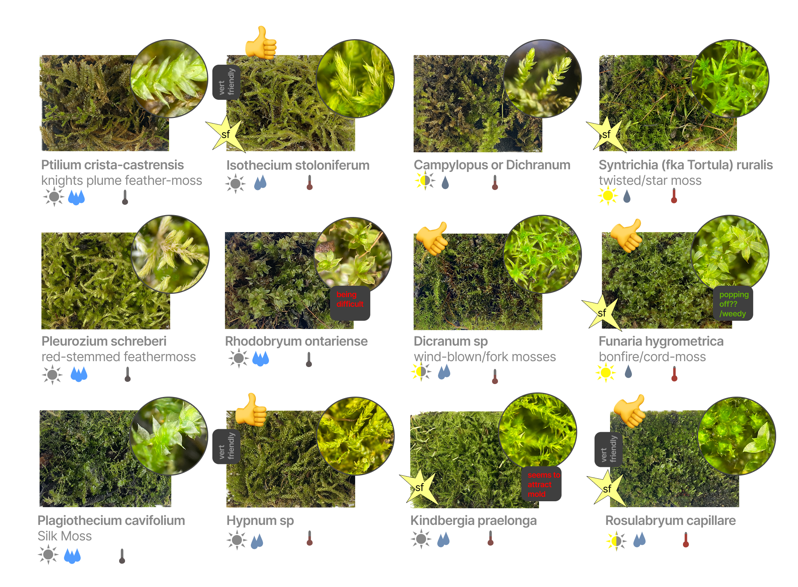

Caring for terrariums allows me to feel closely connected to a living ecosystem and continues to teach me about the profoundly complex interrelationship between water, air, light, and earth.
Since I struggled to find an appropriate tank that opened from the front — which i feel is very important to connecting with them — i decided to make my own with reclaimed glass and a stained glass assembly technique.
